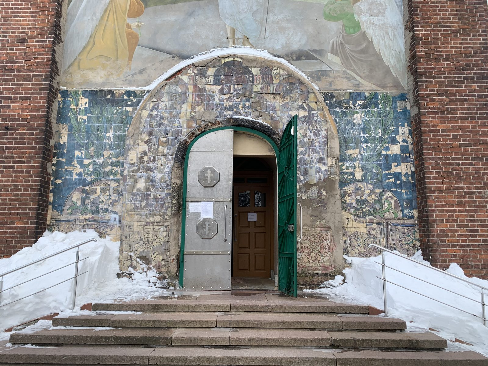
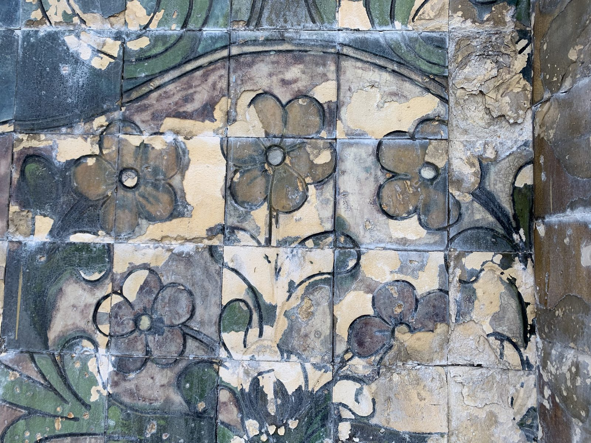
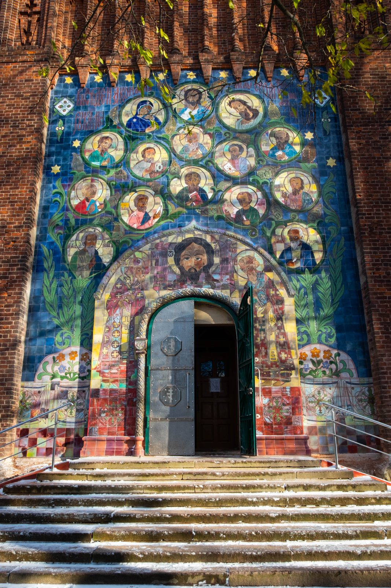
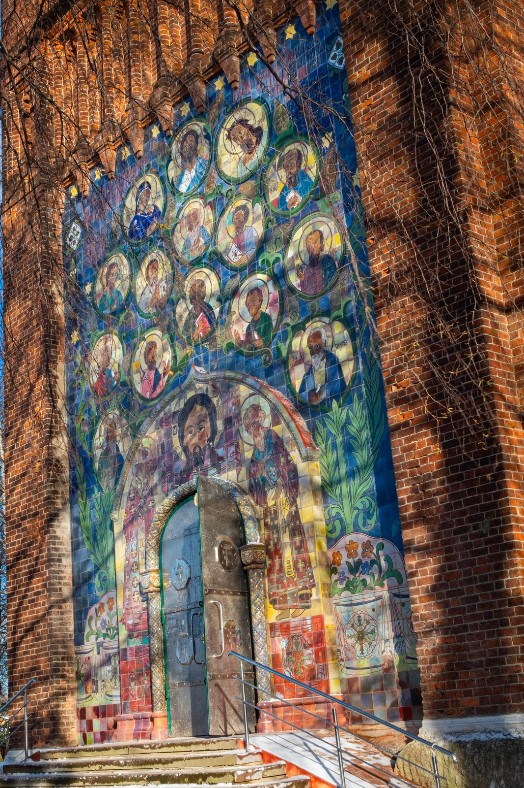

Майоликовое панно Воскресенского храма в Вичуге

Воскресенский храм в Вичуге, исторически — в Тезине, представляет собой крупный памятник абрамцевской архитектурной майолики начала XX века.
Памятник и его утраты
Фасады храма украшали монументальные керамические панно, изготовленные заводом «Абрамцево» по рисункам архитектора И. С. Кузнецова. Западное панно дошло до нашего времени с большими утратами: верхняя часть композиции была уничтожена и заменена живописью, а сохранившиеся нижние фрагменты, включая обрамление портала, были сильно повреждены.
Исследование и источники
К началу реставрационных работ в 2021 году основная часть композиции с изображениями святых была утрачена. Источниками для её воссоздания стали подлинные фрагменты майолики, фотографии 1910-х годов, материалы частных архивов и обломки исторического декора, найденные при раскрытии основания портала.
Художники-реставраторы зафиксировали рисунок и цветовую палитру сохранившейся керамики. Перед демонтажем подлинные плитки промаркировали, чтобы сохранить сведения об их положении в композиции. По натурным и архивным материалам подготовили чертежи, эскизы и прориси фигур и ликов, скопировали сохранившиеся профили колонок и декоративного архивольта.
Материалы и установка
Для новых деталей были подобраны глины, глазури и режимы обжига. Необходимо было получить материал, пригодный для использования на фасаде, учитывая климатические условия, и передать сложную палитру абрамцевской майолики, включая эффекты восстановительного обжига. После изготовления всех элементов панно собрали и установили на западном портале храма.
Как менялся портал



